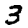
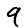
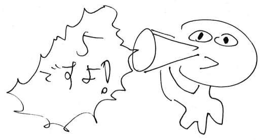

第4回 ディープラーニングへの入り口: MNIST
- ディープラーニングとは
- MNIST (手書き文字認識) とは
- NumPy入門
- NumPyを使ったニューラルネットワークの実装
- MNIST を実装する
- まとめ
1. ディープラーニングとは
ディープ ニューラル ネットワーク (deep neural network) とは、
レイヤーを非常に多く (深く) 重ねたニューラルネットワークのことである。
ディープ ラーニング (深層学習、deep learning) も
ほぼ同じ意味で使われている。
ディープラーニングは、もともと画像処理の分野で発展してきたものである。
現在では音声やテキスト処理にも応用されているが、画像処理での利用が多い。
ディープラーニングと従来の機械学習方式との違いは、
従来の機械学習の多くがデータに関するなんらかの前処理 (輪郭抽出など) が
必要だったのに対して、ディープラーニングはその前処理工程もふくめて
学習できるため「生のデータをそのまま入力できる」点であるとされる。
今回はディープラーニングの基礎を学ぶために、
代表的な 2つの認識タスクである MNIST と CIFAR-10 を
実装してみよう。その過程で、認識精度を上げ、
より実用的なニューラルネットワークを設計するための
いくつかのテクニックについて説明する。
2. MNIST (手書き文字認識) とは
MNISTデータベース は
手書き文字認識のためのデータセットで、
ディープラーニングの入門書で必ずといってよいほど扱われている。
MNIST を使った手書き文字認識は、様々な機械学習アルゴリズムの
性能を試験するときの指標のひとつとなっている。
ここでは入力と出力は以下のように定義される:
- 入力: 28×28 (=784) ピクセルからなるグレースケール画像
- 出力:
0 から 9 までの「ラベル」
ニューラルネットワークでは、10種類のラベルを区別するために
10個の値の出力を使うことにする。これは
「特定の値だけが 1 で、それ以外は 0 である」
ようなベクトルである。
このようなベクトルは、one-hot ベクトル などと呼ばれる:
- 入力:  (784要素のベクトル)
- 出力:
[0 0 0 1 0 0 0 0 0 0] (10要素のベクトル、3番目の要素が 1)
- 入力:  (784要素のベクトル)
- 出力:
[0 0 0 0 0 0 0 0 0 1] (10要素のベクトル、9番目の要素が 1)
このタスクは前回実装したニューラルネットワークを使って、
簡単に実行することができる:
- 入力が 784個で、出力が 10個の値をもつニューラルネットワークを作る。
- 訓練データの画像とラベルを使って学習する:
- 28×28ピクセルの画像を 784要素のフラットなリストに変換し、
グレースケールの値 (0〜255) を 0〜1 に変換して入力する。
- 各ラベルは 10要素のリストに変換し、
10個の出力と比較して損失を計算する。
さて、2次元の画像を 1次元のリストに変換してしまっているが、
これでは上下左右の関係が学習できないのでは? と思うかもしれない。
しかし、たとえば以下のような対応関係があったとして:
ここで左右のピクセル関係は、たとえば
「0番目の要素と 1番目の要素の関係」であり、
上下のピクセル関係は「0番目の要素と 28番目の要素の関係」などに相当する。
ニューラルネットワークのノードは全接続されているので、
位置に関係なく「すべてのピクセル間の関係」を学習しようとする。
したがって、画像サイズがつねに一定で、各ピクセルがつねに
同じ要素に対応していれば、この方法でも十分に上下左右のピクセル間の関係を
学習できることになる。
このように、どんなデータでもベクトルに変換して学習できることは
ニューラルネットワークの大きな特長である。
3. NumPy入門
前回のニューラルネットワークの実装では、
数値の表現に Python のリストを使っていた。
これをそのまま使うこともできるが、効率が悪いため
MNIST の認識をおこなう前に NumPy と呼ばれる
Python ライブラリを使って、コードをもう少し高速化する。
NumPy を使うと Python 上で固定長の数値配列を簡単かつ高速に演算することができる。
3.1. NumPy を使う準備
まず numpy モジュールは素の Python には含まれていないので、
インストールする必要がある (Anaconda あるいは Google Colab を使っている場合は不要):
C:\> pip install numpy
Python 中でモジュールを使うときは、
以下のように import する (なぜか numpy を np という名前にするのが慣例):
import numpy as np
3.2. ndarray型とは
NumPy が提供する機能は、基本的には ndarray型だけである。
これは通常の Python リストと似ているが、以下の点が異なっている:
- すべての要素は同一の数値型
(
int型や float型) である。
- 要素の追加・削除はできず、固定長として扱う。
- Python リストでは
+ 演算子はリストの連結を
意味するが、ndarray型はそうではない。(後述)
ndarray配列を作成するには、以下の方法のどれかを使う:
>>> np.array([1,2,3,4])
>>> np.array([[1,2,3], [4,5,6]])
>>> np.zeros(4)
>>> np.zeros((2, 3))
>>> np.random.random(4)
>>> np.random.random((2, 3))
- Pythonで10×10要素のリスト(のリスト) を作り、
これを
ndarray配列に変換せよ。
-
np.random.random((3, 3)) の値を表示せよ。
3.3. ndarray型における演算
ndarray型は Python のリストに比べ、
演算がより簡単に行えるよう拡張されている。
ここでは代表的な例をいくつか説明する。
まず単一の値と ndarray配列を演算すると、
その値は配列中の各要素に分配 (broadcast) される:
>>> 5 + np.array([1,2,3])
array([6, 7, 8])
これは演算子の左右が逆転しても同じである:
>>> np.array([1,2,3]) * 5
array([ 5, 10, 15])
さて、通常の Python リストとは異なり、ndarray配列どうしは
+ 演算子では連結できない。
+ 演算子は要素ごとの計算 (element-wise)
として解釈される。
>>> np.array([1,2,3]) + np.array([4,5,6])
array([5, 7, 9])
他の *, / などの演算子でも同様である:
>>> np.array([1,2,3]) * np.array([4,5,6])
array([4, 10, 18])
ただし、このとき 2つの ndarray配列は
同じ要素数でなければならない:
>>> np.array([1,2,3]) + np.array([4,5,6,7,8])
ValueError: 長さが異なるものは演算不可
さらに注意が必要なのは、多次元配列 (2次元以上) の場合である。
NumPy では
多次元配列は「配列の配列 (ndarray の ndarray)」として
表現されているが、多次元配列の要素にも同様のルールが再帰的に適用されるのである:
>>> 5 + np.array([[1,2,3], [4,5,6]])
array([[ 6, 7, 8],
[ 9, 10, 11]])
Element-wise と
broadcast が両方適用される場合もある。
以下の例はやや変則的で、1要素の配列がひとつの値と同様に扱われている:
>>> np.array([[-1],[1]]) * np.array([[1,2,3], [4,5,6]])
array([[-1, -2, -3],
[ 4, 5, 6]])
配列の次数が異なる場合 (1次元 + 2次元) でも
broadcast が適用される:
>>> np.array([-1,0,1]) + np.array([[1,2,3], [4,5,6]])
array([[0, 2, 4],
[3, 5, 7]])
(なお、NumPy の用語では「次元 (=ひとつの要素を特定するのに必要な添字の数)」
のことを axis と呼んでいる。)
以下の例は少しわかりにくいかもしれない。
broadcast の結果、全体の要素数が増えることもある:
>>> np.array([[-1],[1]]) * np.array([1,2,3])
array([[-1, -2, -3],
[ 1, 2, 3]])
以下の ndarray配列の演算をしたときの結果を予想し、
実際に実行してみて結果を確認せよ。
>>> np.array([1,2]) * np.array([3,4])
>>> np.array([1,2]) * 4
>>> np.array([[1,2], [3,4]]) + np.array([[5,6], [7,8]])
>>> np.array([[1],[2],[3]]) * np.array([1,2,3])
>>> np.array([1,2]) * np.array([3])
>>> np.array([1,2]) * np.array([3, 4, 5])

3.4. ndarray型の参照・変更
ndarray配列の参照・変更は、基本的に Python リストと
同じように扱える。多次元配列の ndarray の場合、
a[i][j] とともに a[i,j] という表記も許されている。
>>> a = np.array([[1,2,3], [4,5,6]])
>>> a[0]
array([1, 2, 3])
>>> a[1][2]
6
>>> a[1][1:3]
array([5, 6])
>>> a[1,2]
6
>>> a[0,1] = 0
>>> a
array([[1, 0, 3],
[4, 5, 6]])
>>> a.fill(0)
ndarray独自の (Python の多次元配列にはない) 機能として、
配列の部分列を 2次元で切り出す機能がある。
これは通常の多次元配列の仕組みとは異なるため、添え字に
, を使った表記でないと実現できないことに注意。
この機能は、後に畳み込みニューラルネットワークを実装する際に活用する。
>>> a = np.array([[1,2,3], [4,5,6], [7,8,9]])
>>> a[0:2,1:3]
array([[2, 3],
[5, 6]])
>>> a[0:2][1:3]
array([[4, 5, 6]])
ndarray配列の大きさを知るためには複数の方法がある:
>>> a = np.array([[1,2,3], [4,5,6]])
>>> len(a)
2
>>> a.size
6
>>> a.shape
(2, 3)
さて、ndarray配列には要素を追加・削除することはできないが、
reshape() メソッドを使って「形を変える」ことはできる。
これは後でデータを効率よく処理したいときに使える:
>>> a = np.array([[1,2,3], [4,5,6]]) # もとは 2行×3列の配列。
>>> a.reshape(3,2)
array([[1, 2],
[3, 4],
[5, 6]])
>>> a.reshape(6)
array([1, 2, 3, 4, 5, 6])
3.5. ndarray型を便利に使うための関数
他にも、NumPy には ndarray配列を便利に使うための
関数がいくつも用意されている。代表的なものを以下に示す:
>>> np.sum(np.array([1, 2, 3]))
6
>>> np.sqrt(np.array([1, 2, 3]))
array([1., 1.41421356, 1.73205081])
>>> np.exp(np.array([1, 2, 3]))
array([2.71828183, 7.3890561, 20.08553692])
>>> np.dot(np.array([1,2,3]), np.array([4,5,6])
32
>>> np.max(np.array([5, 9, 4, 0]))
9
>>> np.argmax(np.array([5, 9, 4, 0]))
1
4. NumPyを使ったニューラルネットワークの実装
では前回の Layerクラスを ndarray型を用いて書き直してみよう。
インスタンスの初期化部分では、Python のリスト内包表記を
ndarray型の作成にすればよい。
ここで定義される self.w, self.dw は、
それぞれ nout行×nin列の2次元配列となり、
self.b, self.db はそれぞれ
nout要素の配列となる
(以前の部分は薄灰色で表示されている):
class Layer:
def __init__(self, nin, nout):
self.nin = nin
self.nout = nout
# self.w = [ [ random()-.5 for j in range(self.nin) ] for i in range(self.nout) ]
# self.b = [ random()-.5 for i in range(self.nout) ]
self.w = np.random.random((self.nout, self.nin)) - .5
self.b = np.random.random(self.nout) - .5
self.x = self.y = None
# self.dw = [ [ 0 for j in range(self.nin) ] for i in range(self.nout) ]
# self.db = [ 0 for i in range(self.nout) ]
self.dw = np.zeros((self.nout, self.nin))
self.db = np.zeros(self.nout)
self.loss = 0
return
forward() メソッドは、以下のように変更する:
def forward(self, x):
self.x = x
# self.y = [
# sigmoid(sum( w1*x1 for (w1,x1) in zip(w, x) ) + b)
# for (w,b) in zip(self.w, self.b)
# ]
self.y = sigmoid(np.dot(self.w, x) + self.b)
return self.y
ここでは出力の計算を np.dot() を使って 1行でおこなっている:
なお NumPy 用の sigmoid() 関数は、以下のようにする。
これは ndarray型の各要素に対して
シグモイド関数を計算するような関数となっている:
def sigmoid(x):
# return 1 / (1 + exp(-x))
return 1 / (1 + np.exp(-x))
def d_sigmoid(y):
return y * (1-y)
mse_loss(), backward(), update() の
各メソッドも同様に書き直す。ndarray を使うことにより
簡潔になっている部分に注目してほしい:
def mse_loss(self, ya):
# self.loss += sum( (y1-ya1)**2 for (y1,ya1) in zip(self.y, ya) )
self.loss += np.sum((self.y - ya)**2)
# delta = [ 2*(y1-ya1) for (y1,ya1) in zip(self.y, ya) ]
delta = 2*(self.y - ya)
return delta
def backward(self, delta):
# ds = [ d_sigmoid(y1) for y1 in self.y ]
ds = d_sigmoid(self.y)
# for i in range(self.nout):
# for j in range(self.nin):
# self.dw[i][j] += delta[i] * ds[i] * self.x[j]
# for i in range(self.nout):
# self.db[i] += delta[i] * ds[i]
self.dw += (delta * ds).reshape(self.nout, 1) * self.x
self.db += delta * ds
# dx = [
# sum( delta[j]*ds[j]*self.w[j][i] for j in range(self.nout) )
# for i in range(self.nin)
# ]
dx = np.dot(delta * ds, self.w)
return dx
def update(self, alpha):
# for i in range(self.nout):
# for j in range(self.nin):
# self.w[i][j] -= alpha * self.dw[i][j]
# for i in range(self.nout):
# self.b[i] -= alpha * self.db[i]
self.w -= alpha * self.dw
self.b -= alpha * self.db
# for i in range(self.nout):
# for j in range(self.nin):
# self.dw[i][j] = 0
# for i in range(self.nout):
# self.db[i] = 0
self.dw.fill(0)
self.db.fill(0)
self.loss = 0
return
上の NumPy を使ったニューラルネットワークの実装を使って、
前回のピタゴラスの定理を学習する例題を実行せよ。
np.random.seed(0)
data = []
for i in range(100):
x = np.random.random(3)
ya = np.sqrt((x**2) / 3)
data.append((x, ya))
layer1 = Layer(3, 3)
layer2 = Layer(3, 1)
実際に実行してみると NumPy を使ったバージョンのほうが
若干遅いことに気づくが、これは ndarrayの処理にかかる
オーバーヘッドがあるためで、扱っている要素数が少ない場合はこのようになる。
配列の要素が増えると NumPy のほうが速くなる。
5. MNIST を実装する
では NumPy で実装したニューラルネットワークを使って、
実際に MNIST の認識タスクをやってみよう。
訓練データおよびテストデータは
MNISTページからダウンロードする。
4つの .gz形式のファイルを保存すればよい。
(注意:
macOS などでは、.gz形式のファイルが勝手に展開されてしまうことがあるので、
リンクを Control + クリック して
リンク先のファイルをダウンロード を選ぶ。)
-
train-images-idx3-ubyte.gz
-
train-labels-idx1-ubyte.gz
-
t10k-images-idx3-ubyte.gz
-
t10k-labels-idx1-ubyte.gz
今回作成するのは次のような 3層の (Layer を 2つ使った)
ニューラルネットワークである:
layer1 = Layer(784, 100)
layer2 = Layer(100, 10)
ダウンロードした MNISTのデータを読み込むため、
mnist.py ファイルで load_mnist() 関数が
定義されている。
これは、ファイルの内容をひとつの巨大な ndarray型に変換する。
以下のようにして訓練データ用の画像とラベルを取得する。
変数 train_images と train_labels の内容は、
それぞれ次のようになっている:
train_images = load_mnist('train-images-idx3-ubyte.gz')
train_labels = load_mnist('train-labels-idx1-ubyte.gz')
どちらの変数にも、60,000個ずつの訓練データが含まれている。
train_images 中の各画像はさらに 28×28 の2次元配列であるので、
全体として train_images は 60,000×28×28要素 の ndarray となり、
train_labels は 60,000要素 の ndarray となっている。
これら2つの要素を zip() 関数で対にして、
画像とラベルをひとつずつニューラルネットワークに学習させていく:
for (image,label) in zip(train_images, train_labels):
x = (image/255).reshape(784)
ya = np.zeros(10)
ya[label] = 1
...
ここでは各画像 image を255で割り、
reshape() でフラットな1次元配列に変換している。
これは元画像がグレースケールのため各ピクセルの範囲が 0〜255 の
整数となっているのを、 0〜1 の小数に変換するためである。
正解データ ya はラベルの値を元に 10要素の配列を作成している。
まとめると、次のようなプログラムになる:
mnist_slow.py (遅いバージョン)
train_images = load_mnist('train-images-idx3-ubyte.gz')
train_labels = load_mnist('train-labels-idx1-ubyte.gz')
layer1 = Layer(784, 100)
layer2 = Layer(100, 10)
for i in range(100):
for (image,label) in zip(train_images, train_labels):
x = (image/255).reshape(784)
ya = np.zeros(10)
ya[label] = 1
y = layer1.forward(x)
y = layer2.forward(y)
delta = layer2.mse_loss(ya)
delta = layer2.backward(delta)
delta = layer1.backward(delta)
print(layer2.loss)
layer1.update(0.01)
layer2.update(0.01)
実は上のプログラムをそのまま実行しても一応動くのだが、
非常に時間がかかってしまう。
そこで、以下にもうすこし実用的な方法を説明しよう。
5.1. ミニバッチと SGD法
本来、勾配降下法は訓練データ全部に対する勾配の平均を使って
重み・バイアスを調整していく方法であった。
しかし MNIST の訓練データは非常に大きく、
これを一度処理するだけでも時間がかかる。
もしこれを数千回も反復させると、学習に非常に時間がかかることになる。
そこで、訓練データを全部見ずに、
一部を見た時点でパラメータを漸進的に更新していく、という方法が考えられる。
訓練データをいくつかの ミニバッチ (minibatch) に区切り、
ミニバッチごとに重み・バイアスを更新していくのである:
このためには、たとえば上のプログラムを次のように変更すればよい:
mnist_minibatch.py (ミニバッチバージョン)
n = 0
for (image,label) in zip(train_images, train_labels):
...
n += 1
if (n % 50) == 0:
print(layer2.loss)
layer1.update(0.01)
layer2.update(0.01)
この例では、入力50個ごとに重み・バイアスを更新している。
MNIST の訓練データは全部で 60,000個あるので、
60000÷50 = 300回更新されることになる (300ミニバッチ)。
ミニバッチを使って重みを更新していくと、
訓練データを全部見ているわけではないので、
学習の結果は訓練データが現れる順序、
つまり確率にある程度左右されてしまう。
そのため、この方法は確率的 勾配降下法
(Stochastic Gradient Decent)、通称 SGD と呼ばれている。
実際には、全訓練データを1回見るだけでは学習が足りないので、
さらにこのプロセス全体を何回か繰り返す。
この「全訓練データに対する繰り返し回数」をエポック (epoch) という。
SGD は、今日のニューラルネットワークでは標準的な学習方法である。
たとえばエポックを 5 とすると:
n = 0
for epoch in range(5):
for (image,label) in zip(train_images, train_labels):
...
注意:
本来は 1エポックごとに訓練データの順序をシャッフルして、
なるべく訓練データの順序によって学習に偏りが出ないようにするべきである。
今回はその処理は省略している。
- 上のプログラム
mnist_minibatch.py を完成させ、実際に実行せよ。
ただし、エポック 5回は実行時間が長すぎるので、最初は 1回でよい。
- エポックを 2回に増やすと、表示される損失はどう変化するか?
5.2. 学習結果を使う
学習が完了したら、実際にそのニューラルネットワークを使って認識をさせてみよう。
テストデータを読み込み、これをいま学習したネットワークに通す。
本来、出力である 10要素のベクトルには、該当する数字の要素が
「1」になっているはずだが、
計算結果が正確に 1 になることはまずありえないので、
ここでは「もっとも大きな値」の要素を正解の数字とする。
このためには、np.argmax() 関数を使う:
>>> y = np.array([0.1, 0.0, 0.2, 0.9, 0.1, 0.1, 0.5, 0.2, 0.6, 0.4])
>>> np.argmax(y)
3
実際に認識精度を測定する部分は、次のようになる:
test_images = load_mnist('t10k-images-idx3-ubyte.gz')
test_labels = load_mnist('t10k-labels-idx1-ubyte.gz')
correct = 0
for (image,label) in zip(test_images, test_labels):
x = (image/255).reshape(784)
y = layer1.forward(x)
y = layer2.forward(y)
i = np.argmax(y)
if i == label:
correct += 1
print(len(test_labels), correct)
- 演習4-4. で完成させた
mnist_minibatch.py の
末尾に上のコードを追加し、認識精度を測定せよ。
- エポックが 1回のときと 2回のときで認識精度の違いを観察せよ。
- レイヤー1 と レイヤー2 の間に、さらに 100ノードの中間レイヤーを
挿入すると、認識精度はどう変化するか?
layer1 = Layer(784, 100)
layerx = Layer(100, 100)
layer2 = Layer(100, 10)
ここで注目すべきことは、レイヤーをいくら増やしても
ネットワーク全体は依然として微分可能になっているということである。
一般に、レイヤーを増やせば増やすほどニューラルネットワークの
学習能力は向上すると言われている。
しかし同時に重み・バイアスが変化する速度も遅くなるため
(勾配消失問題)、より学習に時間がかかるようになる。
5.3. エポックは何回やれば充分か?
これまでエポックの回数を多くすればニューラルネットワークが収束し、
損失が減少すると説明してきた。
ではエポックは多くすればするほどよいのだろうか? 実はそうではない。
損失が少ないからといって、誤りが少ないとは限らないのである。
ニューラルネットワークの損失が少なすぎると、
これは訓練データの正解をただ記憶しているだけになってしまう。
このような現象を過学習 (overfitting) という。
過学習は機械学習システムが「過去問 (訓練データ)」に適合することにばかり
注力してしまい、「本番の試験 (テストデータ)」に対応できなくなって
しまっている状態である。過学習はどのような機械学習システムでも存在しうるが、
ニューラルネットワークの場合、これはエポックを多くしすぎると発生する。
このような事態を防ぐために使われているのが 検証データ (validation data)
である。これは訓練データの一部をあらかじめ小規模なテストデータとして
分けておき、エポックごとに毎回小規模な精度測定をおこなって
精度が低下していないかチェックする、というアイデアである。
検証データを使った訓練は、以下のようなステップでおこなう:
- 訓練データを「訓練データ」と「検証データ」に分ける。
- 毎エポックごとに、訓練データでニューラルネットワークを訓練したあと、
検証データを使って簡単に精度測定をおこなう。
- 精度が改善している場合は、2. を繰り返す。
以上を疑似コードで表すと以下のようになる:
prev_accuracy = 0
for epoch in range(100):
train(train_data)
accuracy = test(val_data)
if accuracy <= prev_accuracy:
break
prev_accuracy = accuracy
本講座では検証データを使った実装は省略するが、
精度の高いニューラルネットワークを実際に設計・訓練しようとする際には
検証データは必要不可欠である。
5.4. Softmax 活性化関数と交差エントロピー損失
以上で MNIST をニューラルネットワークで実装することができた。
演習4-5. をやってみると、おそらく 92% 程度の精度が出るはずである。
これは単純なニューラルネットワークにしては、そこそこの性能といえるかもしれないが、
まだそれほど高いとはいえない。
認識精度をさらに上げるには、どうすればよいだろうか?
これまで、精度を上げる方法として以下のようなものを見てきた:
- 訓練データの数を増やす。
- 各レイヤーごとのノードの数を増やす。
- レイヤーの数 (深さ) を増やす。
- 反復 (エポック) の数を増やす。
実はニューラルネットワークの世界では、これ以外にも精度を上げるための
数多くのテクニックがある。ここではそのひとつとして
「損失関数を改良する」方法を説明する。
これまでのニューラルネットワークでは、
損失関数として平均二乗誤差 (MSE loss) を使ってきた。
平均二乗誤差を下げるということは、ニューラルネットワークの出力が
訓練データの正解に近づくということを意味する。
しかし、MNIST のようなタスクの損失として平均二乗誤差を使うことは
必ずしも理想的ではない。たとえば、以下のようなケースがあったとする:
出力: [ 0.1, 0.0, 0.2, 0.9, 0.1, 0.1, 0.5, 0.2, 0.6, 0.4]
正解: [ 0, 0, 0, 1, 0, 0, 0, 0, 0, 0]
まず、このニューラルネットワークの出力ベクトルのうち、
重要なのは「何番目の要素が最大か」という情報だけである。
「0.9」などの具体的な値は重要ではない。
また、正解ベクトルでも重要なのは「何番目の要素が最大か」
という情報だけであって、1 という具体的な値が重要なわけではない。
しかし平均二乗誤差を使ったニューラルネットワークではとにかく
出力ベクトルの個々の値を正解ベクトルに近づけようとするため、
これらの余計な情報まで学習しようとする。
さらに、MNISTのようなタスクでは、ひとつの入力画像に対する正解は 1つだけである。
つまり、正解ベクトルの 2箇所以上が 1 になることはない。
しかしニューラルネットワークはこの特性を利用できておらず、
出力のすべての数値になんらかの意味があるものとして学習している。
以上の 2つの問題を一気に解決するのが
「Softmax 活性化関数」と「交差エントロピー損失」である。
これは MNIST のように「複数のカテゴリから 1つのものを選ぶ」ような
判定タスクに使われる。その具体的な方法は以下のとおりである:
- ニューラルネットワークの最後のレイヤーだけ、
シグモイド関数のかわりに Softmax関数 を活性化関数として使う。
- 損失関数として、平均二乗誤差のかわりに 交差エントロピー誤差
(cross entropy error) というものを使う。
Softmax関数とは、文字どおり最大値を返す max関数を
「ソフトに」したものである。微分可能な max関数といってもよい。
これは与えられたベクトルの各要素 ai を
以下のような値で置き換える:
ai → exp(ai) / (exp(a1) + exp(a2) + ... + exp(an))
通常の Python では、これは以下のように書ける:
def softmax(x):
x = [ exp(a) for a in x ]
z = sum(x)
return [ a/z for a in x ]
NumPy版では:
def softmax(x):
x = np.exp(x)
return x / np.sum(x)
いっぽう交差エントロピーとは、
本来は 2つの確率分布の差を求めるものである。
じつは Softmax関数の各要素を合計すると 1 になるので、
Softmax関数の出力は確率分布として解釈できるといってもよい。
正解データも同様にひとつの要素だけが 1 で、
あとはすべて 0 なので、
確率分布としての解釈が可能である。
n種類の可能性の確率をあらわす、ふたつの確率分布
[p1, p2, ..., pn] および
[q1, q2, ..., qn] があるとき、
交差エントロピー誤差 H(p, q) は、次のように表される:
H(p, q) = -(p1 · log(q1) +
p2 · log(q2) + ... +
pn · log(qn))
- あるニューラルネットワークの重み合計が
[3, -2, 0, 9, 4]
だったとする。これらの値に対して Softmax関数を適用したときの値を求めよ。
- さらに、この値と
[0.1, 0.1. 0.5, 0.2, 0.1] という
確率分布との交差エントロピー誤差を求めよ。
MNISTの判定においては、正解データのベクトルは
ひとつの要素だけが 1 である。
したがって、これを上の式に適用すると、ひとつの項だけが残り、
交差エントロピー誤差の計算は Python で以下のように簡単化できる:
def nll_loss(y, i):
return -np.log(y[i])
ここで y は Softmaxレイヤーの出力、i は正解の要素である。
この関数は一般に Negative Log Likelihood (NLL) とも呼ばれる。
さて、Softmax関数と交差エントロピー誤差を同時に紹介したのには理由がある。
「Softmax関数 + 交差エントロピー誤差」の組み合わせを使うと、
勾配を計算するのが非常に簡単になるためである。
計算の詳細は省略するが、
交差エントロピー誤差の損失を LCEE とすると、
以下のようになる:
∂LCEE/∂wi =
∂LCEE/∂y · ∂y/∂wij =
(y - y0) · xi
∂LCEE/∂b =
∂LCEE/∂y · ∂y/∂bi =
(y - y0)
では実際に Softmax関数と交差エントロピー誤差を使った
新しいレイヤークラス SoftmaxLayer を定義しよう。
__init__() メソッドと update() メソッドは
以前と同じである:
class SoftmaxLayer:
def __init__(self, nin, nout):
...
def update(self, alpha):
...
forward() メソッドでは、
シグモイド関数のかわりに Softmax関数を使うよう変更する:
def forward(self, x):
self.x = x
self.y = softmax(np.dot(self.w, x) + self.b)
return self.y
最後に、損失関数の計算および勾配降下法の部分を実装する。
先に説明した「Softmax関数 + 交差エントロピー誤差」で勾配計算が
簡単化されたため、これはひとつのメソッドでやってしまうことにする:
def cross_entropy_loss_backward(self, ya):
i = np.argmax(ya)
self.loss += nll_loss(self.y, i)
delta = (self.y - ya)
self.dw += delta.reshape(self.nout, 1) * self.x
self.db += delta
dx = np.dot(delta, self.w)
return dx
演習4-5. で作成したコードの最後のレイヤーを
SoftmaxLayer に変更し、認識精度の違いを確認せよ:
layer1 = Layer(784, 100)
layer2 = SoftmaxLayer(100, 10)
5.5. LogSoftmax関数
ちなみに第6章で説明する PyTorch では効率のため、
普通の Softmax関数ではなく、そのlogをとったものを使っている。
NumPy ではこのようなコードになる:
def log_softmax(x):
return x - np.log(np.sum(np.exp(x)))
LogSoftmax を使うと、交差エントロピー誤差の計算
(Negative Log Likelihood) が簡単になる:
def nll_loss(y, i):
# return -np.log(y[i])
return -y[i]
6. まとめ
- ディープ ニューラル ネットワーク あるいは ディープ ラーニング は、
多数のレイヤーを重ねたニューラルネットワークである。
- ディープニューラルネットワークも依然として微分可能である。
- 一般にレイヤーを増やせば増やすほど学習能力は向上するが、
同時に訓練時間も増加する。
- ディープニューラルネットワークにおける学習は、確率的勾配降下法 (SGD) を
使っておこなう。
- SGD では、訓練データをミニバッチ と
呼ばれるかたまりに分けて、重み・バイアスを更新する。
- MNIST のような画像判定タスクでは、入力は2次元画像のピクセル値をそのまま使用し、
出力形式には one-hot ベクトルを使用する。
- 判定タスクの場合、最後のレイヤーの活性化関数として Softmax を使い、
損失関数として交差エントロピー誤差を使う。
- NumPy の
ndarray型の特徴は、
分配 (broadcast) と
要素ごとの計算 (element-wise) である。
Yusuke Shinyama